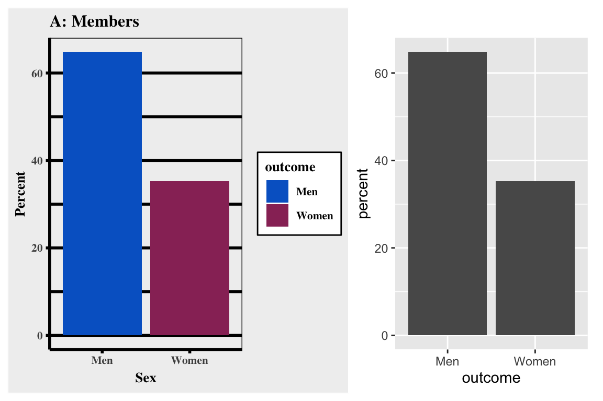

Visualize data

Welcome to tutorial of the Practice R book (Treischl 2023). Practice R is a text book for the social sciences which provides several tutorials supporting students to learn R. Feel free to inspect the tutorials even if you are not familiar with the book, but keep in mind these tutorials are supposed to complement the Practice R book.
Chapter 7 introduced ggplot2 which gives us plenty of
opportunities to visualize data (Wickham, Chang,
et al. 2022). We got in touch with the ggplot()
function, we applied themes, add color, changed fonts, and we learned
many more details about the package. Against this background there are
at least two options for a ggplot2 tutorial: I could ask
you to apply steps to create a similar plot. It is my personal believe
that it needs a lot of time and experience to get fluent in
ggplot2, which is why we do not pursue such a heroic aim.
Some people document the long process to generated a graph as the
artwork by Cédric Scherer underlines. Thus, it needs a lot of time and
effort to develop a customized plot.

Besides the technical skills, the guiding principles of visualization will help you to create insightful visualizations. Cairo (2016) summarizes five qualities of a graph as:”
- It is truthful, as it’s based thorough and honest research.
- It’s functional, as it constitutes an accurate depiction of the data, and it’s build in a way that lets do people meaningful operations based on it (seeing change in time).
- It’s beautiful, in the sense of being attractive, intriguing, and even aesthetically pleasing for its intended audience – scientists, in the first place, but the general public, too.
- It is insightful, as it reveals evidence that we would have a hard time seeing otherwise.
- It is enlightening because if we grasp and accept the evidence it depicts, it will change our minds for the better.” (Cairo 2016: 45).
These principles give us a guidance, but some of them seem complex and depend on the creator and viewer. For example, we probably all agree on the first quality of being truthful, but who says that a graph is (not) beautiful? And what does that even mean? Or a graph might be less insightful if the topic is not novel for the audience. We may argue for a long time whether a principle is fulfilled, but hopefully we agree in the case of obvious flaws that could be improved.
For this reason, this tutorial is dedicated providing first insights
about well-known visualization pitfalls and we increase our
ggplot2 skills by learning how to fix them. First, we learn
why it is important to order data. Then, we inspect why a lot
of people perceive box plots with suspicion. Next, we get in
touch with a spaghetti plot. Finally, we will see what it means
to cut the clutter.
# Tutorial 7 needs the following packages in addition:
library(babynames)
library(forcats)
library(patchwork)
library(dplyr)
library(viridis)
library(ggthemes)
library(ggplot2)
library(showtext)Order the data
Suppose you created a bar graph to examine cars and their
manufacturer (mpg$manufacturer). The data is not important,
but we need to learn how to order the levels of a categorical variable.
As the next console illustrates, the displayed information is difficult
to perceive because the bars are all mixed up. Adjust the levels of a
factor variable manually or use the fct_infreq() function
from the forcats package to order the data by frequency
(Wickham 2022).
#Simple bar graph
p1 <- ggplot(data=mpg, aes(x=manufacturer)) +
geom_bar()
#Order the data with: fct_infreq
p2 <- ggplot(data=mpg, aes(x=manufacturer)) +
geom_bar()
#Combine them with patchwork
p1 + p2# Simple bar graph
p1 <- ggplot(data = mpg, aes(x = manufacturer)) +
geom_bar()
# Order the data with: fct_infreq
p2 <- ggplot(data = mpg, aes(x = fct_infreq(manufacturer))) +
geom_bar()
# Combine them with patchwork
p1 + p2It is our job is to make the graph and its insights accessible. The
example underlines that we need to structure and present the data in a
way that leverages the message. The last graph also illustrates that
there are many group levels making it difficult to depict them all in
one graph even if we ordered the data. Moreover, look at the labels,
they are not vertically aligned which makes it hard to read. Remember,
the forcats package offers many functions to manipulate
factor variables. For example, display only the five largest groups with
the fct_lump function and use the coord_flip()
function to turn around the axes to align the labels vertically.
#Lump levels with fct_lump
mpg$manufacturer_max <- ___
#Left: Plot less levels
p1 <- ggplot(data=mpg, aes(x= fct_infreq(manufacturer_max))) +
geom_bar()
#Right: Flip axes
p2 <- ggplot(data=mpg, aes(x= fct_infreq(manufacturer_max))) +
geom_bar()
p1 + p2# Lump levels with fct_lump
mpg$manufacturer_max <- fct_lump(mpg$manufacturer, n = 5)
# Left: Plot less levels
p1 <- ggplot(data = mpg, aes(x = fct_infreq(manufacturer_max))) +
geom_bar()
# Right: Flip axes
p2 <- ggplot(data = mpg, aes(x = fct_infreq(manufacturer_max))) +
geom_bar() +
coord_flip()
p1 + p2To order the data is important, regardless of the graph created. For
example, suppose you examine car consumption (mpg$hwy) for
different classes of cars (mpg$class) with a box plot. Look
at the unsorted plot, can you tell me which level has the highest mean?
It is complicated to compare groups without a useful order. Try to apply
the fct_reorder() function, because it lets us reorder the
class variable by its consumption (hwy).
# A basic plot
p1 <- ggplot(mpg, aes(hwy, class)) +
geom_boxplot()
# Use fct_reorder to sort class by their consumption
p2 <- ggplot(mpg, aes(hwy, class)) +
geom_boxplot()
p1 + p2# A basic plot
p1 <- ggplot(mpg, aes(hwy, class)) +
geom_boxplot()
# Use fct_reorder to sort class by their consumption
p2 <- ggplot(mpg, aes(hwy, fct_reorder(class, hwy))) +
geom_boxplot()
p1 + p2We therefore are supposed to order the data and communicate in a coherent way, otherwise the audience may get confused. There are however additional pitfalls when it comes to box plots.
Boxplot pitfalls
I generated fake data with a group and an
outcome variable to illustrate the main concerns against
box plots.
# Some fake data
glimpse(data)#> Rows: 615
#> Columns: 2
#> $ group <chr> "A", "A", "A", "A", "A", "A", "A", "A", "A", "A", "A", "A", "A…
#> $ outcome <dbl> 13.205607, 10.974431, 12.925546, 12.483487, 12.204145, 11.9038…Say you estimated a box plot to examine the differences between the
groups. At first glance there seems to be a large differences between
groups as the first box plot reveals, but are we comparing on fair
grounds? See what happens if you add a geom_jitter(). It
displays observations with points, but compared to a
geom_point it adds a small amount of random variation to
reduce over plotting.
#A Basic geom_boxplot
p1 <- ggplot(data, aes(x = group, y = outcome)) +
geom_boxplot()
#Add a geom_jitter(color, size, alpha)
p2 <- ggplot(data, aes(x = group, y = outcome)) +
geom_boxplot()
p1 + p2# A Basic geom_boxplot
p1 <- ggplot(data, aes(x = group, y = outcome)) +
geom_boxplot()
# Add a geom_jitter(color, size, alpha)
p2 <- ggplot(data, aes(x = group, y = outcome)) +
geom_boxplot() +
geom_jitter(
color = "#d62828",
size = 0.5,
alpha = 0.6
)
p1 + p2We are comparing three different groups, but the amount of
observations are unevenly distributed between the groups and we hardly
observe any from group C. This becomes visible when using
geom_jitter() to add observations, compared to
geom_boxplot() which does not display the data. A box plot
disguises such problems which is obviously a serious concern.
The geom_jitter already improved the graph, what else
can we do to fulfill the guiding principles of visualization. For
example, include the sample size in the graph to make our reader
conscious about the problem. The next steps are a bit trickier to apply:
Estimate the sample size per group and assign the results. Use the
dplyr::n() function to count observations, but you will
need to group the data first (Wickham, François,
et al. 2022).
# Estimate sample_size (n) per group
sample_size <- data |>
dplyr::group_by(group) |>
dplyr::summarize(num = dplyr::n())
sample_size# Estimate sample_size (n) per group
sample_size <- data |>
dplyr::group_by(group) |>
dplyr::summarize(num = dplyr::n())
sample_sizeTo include the sample size in the graph, we need to combine the
group label and the sample size. We can paste text strings
together with the paste (and paste0) function,
as the next console illustrates. It returns text strings which we can
include in the graph.
# Concatenate Strings with paste (and paste0)# Concatenate Strings with paste (and paste0)
paste(sample_size$group, "has N =", sample_size$num, " observations.")First, combine both data sets with a left_join().
Second, create a new variable to add the text label. Use the
paste function to paste the text label, but also add a new
line (\n) to separate the group name and the text to
display the sample size (num).
# Join data and mutate with text labels for group_N# Join data and mutate with text labels for group_N
data <- data |>
dplyr::left_join(sample_size) |>
dplyr::mutate(group_N = paste0(group, "\n", "N=", num))
head(data)Now we can use the new variable (group_N) as
x and include the sample size. It goes without saying that
there are more ways to improve a box plot (and to include text). For
example, we can use a geom_violin() to examine the
distribution, as the second plot on the right side shows.
#Use the new variable group_N as x
#A violin plot and stat_summary
p2 <- ggplot(data, aes(x = group, y = outcome)) +
geom_violin(width=0.6, alpha=0.8)+
stat_summary(fun = "median", color = "red",
size = 1.5, geom = "point")+
stat_summary(fun.data = return_stats,
geom = "text",
size = 2, fontface = "bold",
hjust = 0.5, vjust = 0.9)
p1 + p2# Use the new variable group_N as x
p1 <- ggplot(data, aes(x = group_N, y = outcome)) +
geom_boxplot() +
geom_jitter(
color = "#d62828",
size = 0.5,
alpha = 0.6
)
# A violin plot and stat_summary
p2 <- ggplot(data, aes(x = group, y = outcome)) +
geom_violin(width = 0.6, alpha = 0.8) +
stat_summary(
fun = "median", color = "red",
size = 1.5, geom = "point"
) +
stat_summary(
fun.data = return_stats,
geom = "text",
size = 2, fontface = "bold",
hjust = 0.5, vjust = 0.9
)
p1 + p2As the right plot shows, I used the stat_summary()
function twice to include further statistics. First, I used the function
to display the median of each group. Second, I used a function
(return_stats) that returns the statistics and finally the
stat_summary() function which includes them as text in the
plot. The latter approach is more flexible but also more complicated
than the first approach. The next console shows how the function works
and we will learn more about the geom_text at the end of
this tutorial.
# The return_stats function
return_stats <- function(y) {
return(data.frame(
value = max(y) * 1.2,
label = paste(
"N =", length(y), "\n",
"Mean =", round(mean(y), 2), "\n",
"Median =", round(median(y), 2), "\n"
)
))
}
return_stats(data$outcome)Regardless of the approach, keep in mind that a box plot does not
show the data nor does it display the distribution. Compared to that,
the geom_jitter() displays the data and the violin plot
reveals the underlying distribution.
To calculate the sample size or other statistics seems a bit awkward
if you are not used to customized plots. Fortunately, there are further
ggplot2 extension package that help us with this task. For
example, the see package has a
geom_violindot() function, which combines a violin with a
dot plot. The latter makes it convenient to inspect the sample size and
the distribution (Lüdecke et al. 2022).
Add the geom, fill the dots black (via fill_dots); and find
a reasonable size for the dots via size_dots option.
# The see package adds a geom_violindot
library(see)
ggplot(data, aes(x = group, y = outcome, fill = group))# The see package adds a geom_violindot
library(see)
ggplot(data, aes(x = group, y = outcome, fill = group)) +
geom_violindot(fill_dots = "black", size_dots = 5) +
scale_fill_material_d(palette = "contrast")Or consider the ggstatsplot package: As the result from
the ggbetweenstats() function shows, the package
automatically adds statistical details to the graph. In our case, it
combines box and violin plots to compare the outcome between
the subjects (Patil 2023).
# The ggstatsplot package
library(ggstatsplot)# The ggstatsplot package
library(ggstatsplot)
ggbetweenstats(data, group, outcome) +
theme_minimal(base_size = 10)The spaghetti plot
Another classic visualization pitfall is the spaghetti plot.
Essentially it is a line graph with too many lines and colors which is
why we cannot see what is going on. We can create a spaghetti plot with
the babynames package and the corresponding data (Wickham 2021). The package contains names of
newborn babies in the US and includes proportion for a long period
(1880-2017). Suppose we examine how the most popular male names have
been developed over time. I have already prepared the data to identify
the most popular male names (Top 10: name_pop).
# The Top 10 male names
name_pop#> [1] "James" "Michael" "Robert" "John" "David"
#> [6] "William" "Christopher" "Richard" "Mark" "Jason"To visualize how often these names appear, we need to apply a filter
to get only male babynames and to filter the data for the
Top 10 names.
# Get male baby names for the Top 10 names# Get male baby names for the Top 10 names
babynames_df <- babynames %>%
filter(sex == "M" & name %in% name_pop)Next, visualize the data with a line plot (geom_line).
Use year as x, n as
y, and name as group and color aesthetic.
# Plot# Plot
babynames_df %>%
ggplot(aes(x = year, y = n, group = name, color = name)) +
geom_line() +
scale_color_viridis(discrete = TRUE) +
ggtitle("A spaghetti chart example")What a confusing graph: single lines look like spaghettis and we
can’t see how often each name was used over the time. How can we improve
the spaghetti plot? You are already familiar with a simple, but powerful
solution. Apply a facet_wrap() and split the graph in
subplots.
# Split with facet_wrap
ggplot(babynames_df, aes(x = year, y = n, group = name)) +
geom_line()# Split with facet_wrap
ggplot(babynames_df, aes(x = year, y = n, group = name)) +
geom_line() +
facet_wrap(name ~ ., nrow = 2)There is still room for further improvement: We could - for example -
to draw all lines in gray and highlight for each facet the corresponding
line in a different color. First, we need to create a copy of the
name variable (facet_names), which we will use
to facet the graph.
# Copy the names column
babynames_df$facet_names <- babynames_df$nameNext, I prepared the geom_line() to create a spaghetti
plot one more time with gray lines only, as the first plot on the left
side shows. However, see what happens if you add the
facet_wrap() function and the facet_names
variable to split the graph.
p1 <- ggplot(babynames_df, aes(x=year, y=n)) +
geom_line(data = babynames_df %>% select(-facet_names),
aes(group=name),
color="grey",
linewidth=0.5,
alpha=0.5)
#Add facet_wrap
p2 <- ggplot(babynames_df, aes(x=year, y=n)) +
geom_line(data = babynames_df %>% select(-facet_names),
aes(group=name),
color="grey",
linewidth=0.5,
alpha=0.5)+
theme_minimal(base_size = 8)
p1 + p2p1 <- ggplot(babynames_df, aes(x = year, y = n)) +
geom_line(
data = babynames_df %>% select(-facet_names),
aes(group = name),
color = "grey",
linewidth = 0.5,
alpha = 0.5
)
# Add facet_wrap
p2 <- ggplot(babynames_df, aes(x = year, y = n)) +
geom_line(
data = babynames_df %>% select(-facet_names),
aes(group = name),
color = "grey",
linewidth = 0.5,
alpha = 0.5
) +
theme_minimal(base_size = 8) +
facet_wrap(facet_names ~ ., nrow = 2)
p1 + p2As the second plot show, the new variable gives us the chance to
create subplot for each name, but all lines are still included if we use
the copy. Next, use a second geom_line() for the overlay.
Insert the name as a color aesthetic, which will make a
comparison easier. Moreover, give the overlaying line a distinct
color and adjust its size with linewidth.
#add another geom_line as overlay
final_plot <- ggplot(babynames_df, aes(x=year, y=n)) +
geom_line(data = babynames_df %>% select(-facet_names),
aes(group=name),
color="grey",
linewidth=0.5,
alpha=0.5) +
theme_minimal(base_size = 10)+
facet_wrap(facet_names ~ ., nrow = 2)
final_plot# add another geom_line as overlay
final_plot <- ggplot(babynames_df, aes(x = year, y = n)) +
geom_line(
data = babynames_df %>% select(-facet_names),
aes(group = name),
color = "grey",
linewidth = 0.5,
alpha = 0.5
) +
theme_minimal(base_size = 10) +
facet_wrap(facet_names ~ ., nrow = 2) +
geom_line(aes(color = name), color = "darkred", linewidth = 0.75)
final_plotWe focused on ggplot2, because we need a print version
to visualize data in applied empirical research. However, we could also
make the last plot interactive to untangle the spaghetti plot. For
example, Highcharts is a JavaScript software library to create
interactive charts and I used the highcharter package to
create a responsive HTML version of the spaghetti plot (Kunst 2022). The next console shows the code
for an improved version of the graph with the highcharter
package.
library(highcharter)
hchart(babynames_df, "line",
hcaes(x = year, y = n, group = name),
color = "darkgray"
) |>
hc_title(text = "An interactice spaghetti chart example") |>
hc_legend(enabled = FALSE) %>%
hc_plotOptions(
series = list(
events = list(
mouseOver = JS("function() { if(this.options.color !== 'red') {this.update({color: '#e63946'})} }"),
mouseOut = JS("function() { if(this.options.color === '#e63946') {this.update({color: '#ddd'})} }")
),
states = list(
hover = list(
enabled = TRUE,
lineWidth = 3,
color = "red"
)
)
)
) %>%
hc_colors("#dbdbdb")Learning a new package and creating interactive graphs might be too
far reaching in the beginning, just keep in mind that such possibilities
exits. And in this case it is not even necessary to learn a new package
to make the graph interactive, because the plotly package
can create an interactive version for many standard graphs that are made
with ggplot2 (Sievert et al.
2022). Plotly is a JavaScript library to visualize data and can
convert a ggplot2 object into a plotly chart.
The plotly package
Consider reading Interactive web-based data visualization with R, plotly, and shiny by Carson Sievert if you want to improve your interactive visualization skills
# Interactive web-based data visualization with R, plotly, and shiny
PracticeR::show_link("plotly")Instead of learning more about interactive visualization techniques, the last pitfall is not a flaw, it is a principle and an important advice.
Clutter
Edward Tufte underlines: “Clutter and confusion are failures of design, not attributes of information”. He highlightes that we are supposed to cut the clutter and get rid of everything that is not necessary to visualize the data.
Consider the next two graphs. I made two bar graphs with a toy data
frame and a binary outcome to keep it as simple as possible. I took my
quite some time to create a graph that outlines the idea. As the plot on
the left side shows, I created a theme that is supposed to look like the
old Excel theme with a lot of clutter: The background is gray, I colored
the bars even though the color and the legend do not transport any
information, and I picked thick, black grid lines for a finishing touch.
To compare this ugly beast, the right side shows the
ggplot2 default version. Unfold the code if you want to
create a ugly, cluttered graph on your own.

The reinvention of the old Excel theme seems a bit drastic, but even
the default ggplot2 theme has some clutter that we could
get rid of. This might not be necessary, but it highlights that there is
always room to improve a graph, especially when it comes to clutter. For
example, we could use a different theme to get rid of the
gray background, there is no need to color each bar since they do not
represent information, and we could integrate a label for each bar to
communicate clearly.
So, fill the bars white and make the border of the bars black. In addition, use a theme without background colors and provide a descriptive title.
# De-color de bars
ggplot(df_clutter, aes(x = outcome, y = count)) +
geom_col() +
theme_minimal(base_size = 12)# De-color de bars
ggplot(df_clutter, aes(x = outcome, y = count)) +
geom_col(color = "black", fill = "white") +
theme_minimal(base_size = 12) +
labs(title = "Members by Sex")Next, the geom_text() helps us to integrate text labels.
Essentially, the function displays texts as a geometrical object which
is why the main logic is not different compared to other geoms. I added
a simple data frame (df_text) to illustrate how the geom
works. It contains coordinates for x and y and
an example text to visualize.
As the next console highlights, the function depicts the
text in accordance with the x and
y coordinate, as the plot on the right side shows. The geom
understands supplementary aesthetics and options (e.g.,
size, fontface) to display text. To give you
an idea how it works, add the color aesthetics for each
group and adjust the alignment of the text with the
vjust (vertical adjustment) and the hjust
(horizontal adjustment) option. If you set them to inward,
the text will be aligned towards the center, but there are more
alignment options available (e.g., left,
right, center) should you prefer those.
# geom_text example
p1 <- ggplot(df_text, aes(x, y)) +
geom_text(aes(label = text),
size = 3
)
# insert color aesthetic and adjust options (e.g., size, fontface)
p2 <- ggplot(df_text, aes(x, y)) +
geom_text(aes(label = text),
size = 3
)
p1 + p2# geom_text example
p1 <- ggplot(df_text, aes(x, y)) +
geom_text(aes(label = text),
size = 3
)
# insert color aesthetic and adjust options (e.g., size, fontface)
p2 <- ggplot(df_text, aes(x, y, color = group)) +
geom_text(aes(label = text),
vjust = "inward",
hjust = "inward",
size = 3,
fontface = "bold"
) +
scale_color_brewer(palette = "Set1")
p1 + p2Since the data does not contain text to improve the bar graph, we may
use the paste() function to create a label. It
contains the group level, a new line (\n), and the
percentages.
# Paste a label# Paste a label
paste0(df_clutter$outcome, "\n", df_clutter$percent, "%")Include the latter as a label and adjust the position via the
y parameter Use the count and adjust it by
increasing (decreasing) it manually. In addition, pick a text
color and a reasonable text size.
#Include text labels inside the bars
ggplot(df_clutter, aes(x=outcome, y=count)) +
geom_col(color = "black", fill = "white")+
theme_minimal(base_size = 12)+
labs(title= "Members by Sex") # Include text labels inside the bars
ggplot(df_clutter, aes(x = outcome, y = count)) +
geom_col(color = "black", fill = "white") +
geom_text(
aes(
label = paste0(outcome, "\n", percent, "%"),
y = count - 100
),
color = "black",
size = 3.5
) +
theme_minimal(base_size = 12) +
labs(title = "Members by Sex")Summary
I highlighted several books to improve your ggplot2 and
data visualizations skills, but at the end of the day your skills will
improve faster, if you start to visualize data on your own and accept
that trial and error are not necessarily a wrong approach. To this end,
the ggplot2 cheat sheet (from the package website) will
support you as well.
In addition, keep the following functions and packages from Chapter 7 in mind:
Create a new ggplot (
ggplot), aesthetic mappings (aes), and add a geom_* (e.g.,geom_bar, geom_point, geom_smooth)Add a layer with
+, start each new function on a new line, don’t forget to delete the plus sign if you delete the last line of codeThere are several predefined theme functions (e.g.,
theme_bw,theme_light).Modify axis, legend, and plot labels (e.g., with
labs)Lay out panels in a grid (e.g.,
facet_grid)Discard (or adjust) the legend (e.g.,
theme(legend.position = "none"))Adjust the coordinate system (e.g.,
coord_cartesian)Further packages:
- Themes:
ggthemes(Arnold 2021) - Font types:
showtext(Qiu 2022) - Color: The
RColorBrewer(Neuwirth 2022) and theviridispackage (Garnier 2021) - Many color palettes:
paletteer(Hvitfeldt 2021) - Combine graphs:
patchwork(Pedersen 2022b) - Zoom in:
ggforce(Pedersen 2022a)
- Themes:
Finally, a link to download this tutorial as PDF file.
References